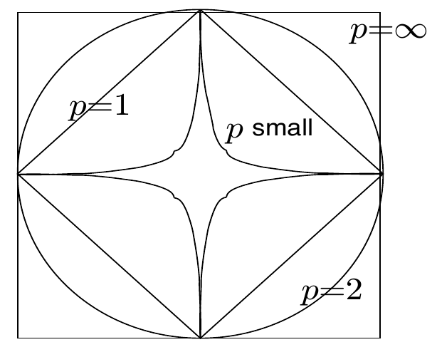
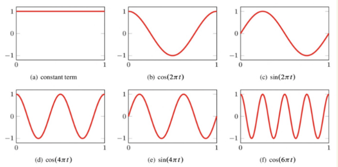
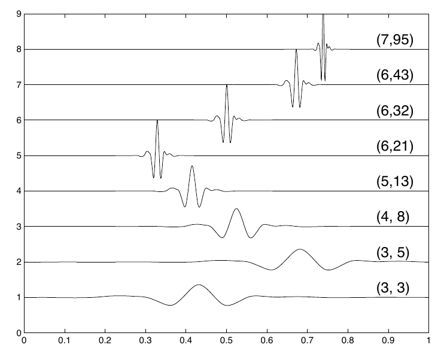
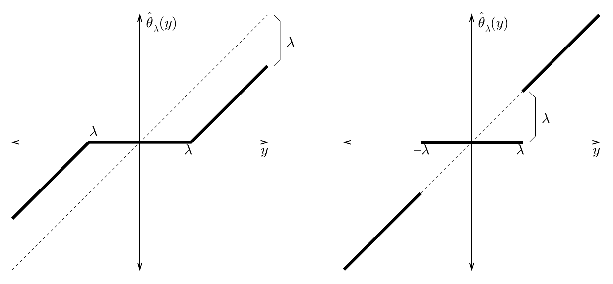
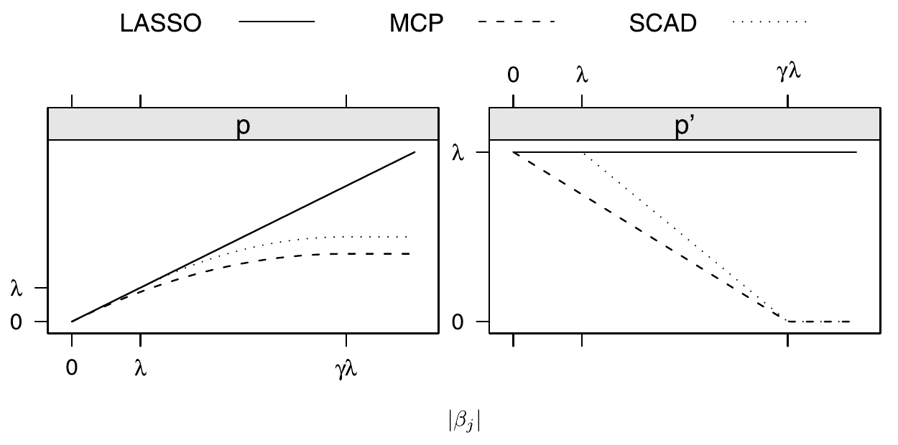

Disclaimer: materials in this pdf are used for STAT 709 “Mathematical Statistics” at the University of Wisconsin–Madison, but they are not guaranteed to be accurate. Consult textbooks whenever possible.
Optional part.
This lecture belongs to optional Part VI and is not examined. Its high, mid and low labels organize a suggested reading path within the optional material; they do not add exam requirements. See the Part VI overview.
Structure. Shrinkage becomes more effective when it matches the signal structure.
Sparsity. A sparse representation suggests thresholding coordinates rather than shrinking every direction equally.
Main route. We connect smoothness to small transform coefficients, analyze soft thresholding in the Gaussian sequence model, and derive its relationship with orthogonal-design LASSO.
Optional extensions. Wavelets, sharp minimax constants and nonconvex penalties remain optional extensions.
Recap from earlier lecturesEarlier ideas used in this lecture · 1 min
These reminders add no exam requirements.
James–Stein shrinkage. A data-dependent radial correction can lower total Gaussian mean risk. Used to contrast global and coordinatewise shrinkage.
Gaussian transformations. Orthogonal transformations preserve spherical Gaussian noise. Used in the sequence model.
Gaussian tails. Exponential tail bounds and a union bound control the largest noise coordinate. Used to choose a threshold.
Learning goals
Distinguish exact sparsity from accurate sparse approximation.
Explain how orthogonal transforms preserve Gaussian noise and squared error.
Compare hard and soft thresholding, and interpret an oracle risk bound.
Derive the LASSO threshold under each stated normalization.
We have seen that Stein’s shrinkage may help improve estimation. However, the effect of shrinkage is most pronounced if we exploit the sparsity structure, which is common in many problems.
1. Sparsity in data analysis
1.1. Motivation
Q: Why is sparsity important?
Occam’s razor. Better interpretability. Less is more.
Variable selection. We collect more and more covariates or features in “Big Data Age,” but important ones are not many.
Biological mechanism. Nature favors sparsity. Sparse coding in primary visual cortex, genetics, etc.
Computation & Memory. Data compression.
1.2. Quantifying sparsity
For a vector \(x \in \mathbb{R}^n\), we say that \(x\) is \(s\)-sparse if \[\begin{aligned} \|x\|_0 := \sum_{j=1}^{n}\mathbb{1}(x_j \neq 0) \le s. \end{aligned}\] In other words, the number of nonzeros in \(x\) is no larger than \(s\). For this reason, it is often called exact sparsity. Despite its conventional name, \(\|x\|_0\) is a count, not a norm.
We can relax this definition by allowing entries of \(x\) to have very small nonzero values. For \(q \in (0, 2]\), we introduce “\(\ell_q\)” norm \[\begin{aligned} \| x \|_q := \Big( \sum_{j=1}^{n} |x_j|^q \Big)^{1/q} \le R. \end{aligned}\]
When q is below one. The radius \(R>0\) measures coefficient size; it is not a count of nonzero entries. A few comments are in order. First, when \(q < 1\), the above definition is only a quasinorm, since it does not satisfy the triangle inequality, but people often call it \(\ell_q\) norm anyway.
Unit-region geometry. Second, as \(q\) gets smaller, the measurement is more stringent: the region of \(\| x \|_q \le 1\) is smaller (Fig. 1).
Exact-sparsity limit. Third, we have \(\|x\|_0 = \lim_{q\to 0} \|x\|_q^q\).

Sparse approximation.
Exact sparsity counts nonzero coordinates. Approximate sparsity instead asks whether retaining a few large coordinates gives small error in the chosen norm.
See Exercise 1 in Section 8 for the full statement and complete solution.
1.3. Smoothness and sparse representations
Smoothness is an important property in many fields and arises naturally in physical systems. Let’s consider a simple analysis to show that smoothness and sparsity are closely related.
Suppose \(f\) is a real, \(2\pi\)-periodic \(C^m\) function, with \(m\ge1\). Its Fourier expansion (in \(L^2\)) is \[f(x) = \frac{A_0}{2} + \sum_{k=1}^\infty \big[A_k \cos(kx) + B_k \sin(kx) \big]\] The coefficients are determined by \[C_k = \frac{1}{\pi} \int_{-\pi}^\pi f(x) e^{ikx} \;dx\] with \(A_0=C_0\), and \(A_k,B_k\) the real and imaginary parts of \(C_k\) for \(k\ge1\). Assume the \(m\)th derivative is bounded: \[\sup_{x\in[-\pi, \pi]} \Big| \frac{d^m}{dx^m} f(x) \Big| \le C.\] Assume also that \(f^{(j)}(-\pi)=f^{(j)}(\pi)\) for \(j=0,\ldots,m-1\), so all boundary terms cancel. Then repeated integration by parts gives \[C_k = \frac{(-1)^m}{(ik)^m} \cdot \frac{1}{\pi} \int_{-\pi}^\pi \frac{d^m}{dx^m} f(x) e^{ikx} \; dx \qquad \Longrightarrow\qquad |C_k|\le\frac{2C}{k^m}\] So the high-frequency coefficients decay very fast. (We can measure the sparsity using \(\ell_q\) norm with \(mq>1\), since \(\sum k^{-mq}<\infty\)).
2. Example: Wavelet transform*
Low priority—not examined: Example: Wavelet transform
2.1. Discrete Fourier transformation
Low priority—not examined: Discrete Fourier transformation
Given \(X \in \mathbb{R}^N\), define \[\begin{aligned} \hat{X}_k = \sum_{n=0}^{N-1}X_n \exp\left(-\frac{i2\pi kn}{N}\right),\quad k = 0, 1, \ldots, N-1. \end{aligned}\] Let \[\begin{aligned} F=\left(\exp(-\frac{i2\pi kn}{N})\right)_{0 \le k, n < N}\in \mathbb{C}^{N\times N}, \end{aligned}\] satisfy \(F^*F=NI_N\); the normalized matrix \(F/\sqrt N\) is unitary (the complex analogue of orthogonal). Then, \[\begin{aligned} \hat{X} = FX, \end{aligned}\] is essentially a change of basis, where \[\begin{aligned} F: \text{ time domain } \longleftrightarrow \text{ frequency domain.} \end{aligned}\]

2.2. Wavelet transform
Low priority—not examined: Wavelet transform
For standard compactly supported wavelets, applying the transform can take \(O(N)\) operations using a filter algorithm. Storing an arbitrary dense \(N\times N\) matrix would instead require \(N^2\) entries.
\[\begin{aligned} \begin{cases} \text{Fourier: localized in frequency.}\\ \text{Wavelet: localized in both time and frequency.} \end{cases} \end{aligned}\] A generic form: \[\begin{aligned} \psi_{jk}(t) = 2^{j/2}\psi(2^jt - k), \end{aligned}\] where in the RHS, \(\psi\) is the mother wavelet, \(2^j\) is the scale, and \(k\) is the shift. For a suitable orthonormal mother wavelet, \(\{\psi_{jk}\}_{j,k\in\mathbb Z}\) forms an orthonormal basis for \(L_2(\mathbb{R})\). Pair \((j, k)\) indicates wavelet \(\psi_{jk}\), at resolution \(j\) and approximate location \(k 2^{-j}\).

For discrete data \(X=(X_l)_{l=1}^N\), define \(\hat{X} = WX\), where \(W\in\R^{N\times N}\) satisfies \(W^\top W=I_N\) and is a discrete wavelet transform1. Often \(\hat X\) is sparse or approximately sparse; \(X=W^\top\hat X\) reconstructs the signal from those coefficients. \[\begin{aligned} \begin{cases} \text{Smoothness of functions } \Longrightarrow \text{ Fourier coefficients decay fast. }\\ \text{(Piecewise) smoothness of functions } \Longrightarrow \text{ Wavelet coefficients sparse / decay fast. } \end{cases} \end{aligned}\]
3. Thresholding
3.1. Gaussian sequence model
We assume that our observations follow the model.
\[\begin{aligned} Y_k = \theta_k + \sigma Z_k,\qquad \text{where}~Z_k \stackrel{\iid}{\sim} \mathcal{N}(0, 1). \end{aligned}\]
(1)The observations \((Y_k)\) can be regarded as transformed or preprocessed measurements. We have raw measurements \(X \in \mathbb{R}^n\), target (unknown) discretized function \((f(t_k))_{k \le n}\), \[\begin{aligned} X_k = f(t_k) + \sigma \omega_k,\quad \omega_k \stackrel{\iid}{\sim} \mathcal{N}(0, 1). \end{aligned}\] Apply orthogonal transform \(Y = WX\) where \(W\) is an orthogonal matrix (constructed from a real orthonormal Fourier basis or an orthogonal wavelet transform). Then we introduce \[\begin{aligned} (\theta_1,\ldots,\theta_n)^\top = W (f(t_1),\ldots, f(t_n))^\top. \end{aligned}\] Since standard Gaussian random vector remains standard Gaussian after orthogonal transformation, we obtain (1). In vector form,
\[\begin{aligned} Y \sim \mathcal{N}(\theta, \sigma^2 I_n). \end{aligned}\]
(2)Assumption.
We assume that \(\theta\in\mathbb{R}^n\) is sparse, such that \[\begin{aligned} (\text{exact sparsity}) \qquad \|\theta\|_0 = \sum_{j=1}^{n} \mathbb{1}(\theta_j \neq 0) \le S. \qquad\qquad\qquad \end{aligned}\]
Orthogonal denoising.
A real orthogonal transform preserves independent spherical Gaussian noise and squared Euclidean error. This lets us estimate sparse coefficients and transform the estimate back without changing the risk.
See Exercise 2 in Section 8 for the full statement and complete solution.
3.2. Thresholding functions
Exact sparsity counts nonzero coordinates. Approximate sparsity instead asks whether retaining a few large coordinates gives small error in the chosen norm.
Without the sparsity assumption, we may estimate \(\theta \in \R^n\) via either the unbiased natural estimator \(Y\) or James-Stein estimator \((1 - \frac{(n-2)\sigma^2}{\|Y\|^2})Y\) (assuming \(n\ge3\) and \(\sigma^2\) is known).
We exploit the sparsity assumption by estimation via two typical thresholding functions \(\hat{\theta}_{j}=T_\tau(Y_{j})\).
Hard Thresholding. \[\begin{aligned} \hat{\theta}_j = \begin{cases} Y_j, & \text{ if } |Y_j| > \tau\\ 0, & \text{ if } |Y_j| \le \tau. \end{cases} \end{aligned}\]
Soft Thresholding. \[\begin{aligned} T_\tau(u) = \text{sgn}(u)(|u| - \tau)_+ = \arg\min_{v\in\mathbb{R}}\left\{\frac{1}{2}(v - u)^2 + \tau |v|\right\}. \end{aligned}\]
Determining thresholding level \(\tau\).
From lectures on convergence modes, we know that \[\begin{aligned} \frac{\|Z\|_\infty}{\sqrt{2\log n}}\stackrel p\longrightarrow1 \qquad \text{ as } n \to \infty. \end{aligned}\] For \(n\ge2\) and known \(\sigma>0\), the universal threshold is\[\begin{aligned} \tau = \sqrt{2\sigma^2\log n}. \end{aligned}\]
Chosen confidence. A finite-sample choice makes the confidence level explicit. A Gaussian tail bound and union bound give \[\PR\left(\max_j|\sigma Z_j|>\sigma\sqrt{2\log(2n/\alpha)}\right)\le\alpha,\qquad0<\alpha<1.\]
A sharper tail bound. At the universal threshold, Mills’ bound gives the sharper estimate \[\PR\left(\max_j|Z_j|>\sqrt{2\log n}\right)\le\frac{1}{\sqrt{\pi\log n}}\longrightarrow0.\]
Interpretation. Thus even the uninflated universal threshold removes all pure-noise coordinates with probability tending to one. Choosing \(1.01\sqrt{2\sigma^2\log n}\) also works, directly from the coarser union bound. Nonzero signal coordinates still incur estimation error.
Summary.
The transform-shrinkage approach is \[\begin{aligned} (X_k) \stackrel{W}{\longrightarrow} Y \mathop{\longrightarrow}_\text{Shrinkage}^{T_\tau} \hat{\theta} \stackrel{W^{-1}}{\longrightarrow} (\hat{f}(t_k)). \end{aligned}\]
Instructor’s NoteSpend error where the signal is
If most true coordinates are zero, carrying one unit of noise in every coordinate is wasteful. Thresholding accepts some bias near the cutoff to silence many empty coordinates. Large surviving coordinates still pay the soft-threshold offset, which is why the choice of cutoff matters.
Picture: hard and soft thresholding.
For fixed observations \(u\in[-4,4]\), compare \(H_\tau(u)=uI\{|u|>\tau\}\) with \(T_\tau(u)=\operatorname{sgn}(u)(|u|-\tau)_+\). At \(\tau=1\) and \(u=(-2,-0.5,0,0.5,2)\), hard thresholding gives \((-2,0,0,0,2)\) and soft thresholding gives \((-1,0,0,0,1)\). The hard rule jumps at the cutoff; the soft rule is continuous and shrinks every surviving value.
Thresholding and normalization.
Hard thresholding keeps large observed coordinates unchanged; soft thresholding also shrinks them toward zero. The threshold in orthogonal LASSO depends on both the loss normalization and the design normalization.

See Exercise 3 in Section 8 for the full statement and complete solution.
4. Denoising theory
4.1. General oracle inequalities
Let us evaluate how well thresholding estimators perform. Consider the MSE as risk function \(R(\theta)=\E\|\hat\theta-\theta\|_2^2\) for an estimator \(\hat \theta\). In this section, our results hold without any sparsity assumption.
Suppose there is an oracle, who tells us the locations (indices) of large signals \(\theta_j\): we estimate \(\theta_j\) by \(Y_j\) and incur MSE \(\sigma^2\), and by \(0\) and incur MSE \(\theta_j^2\) otherwise.
We define the (oracle-aided) ideal risk as follows. \[\begin{aligned} R(\theta, \sigma) = \sum_{i=1}^{n}\min \{\theta_i^2, \sigma^2\}. \end{aligned}\] In particular, if \(\theta\) is \(S\)-sparse, then \[\begin{aligned} R(\theta,\sigma)\le S\sigma^2. \end{aligned}\]
Suppose \(Y \sim \mathcal{N}(\theta, \sigma^2I_n)\). For soft-thresholding estimator \(\hat{\theta}_{\tau_n} = T_{\tau_n}(Y)\) with the level \(\tau_n = \sqrt{2\sigma^2\log n}\), \[\begin{aligned} \mathbb{E}\big[\|\hat{\theta}_{\tau_n} - \theta\|_2^2\big] \le (2\log n + 1) [\sigma^2 + R(\theta, \sigma)]. \end{aligned}\]
The proof is given in [1] (Proposition 8.8, p. 227); the linked text in Further reading develops the coordinatewise oracle bound.
Other threshold rules. Similar bounds hold for hard thresholding.
Unknown support. One striking aspect of this result is that we don’t know the indices of large signals among \(\theta_1,\ldots,\theta_n\).
Cost of adaptation. Compared with the ideal risk, the risk is increased only by a log factor.
Theorem 1 holds with no assumption on \(\theta\). Without assumption on \(\theta\), this is not improvable due to the following minimax result [1] (Eq. (8.35), Section 8.6). As \(n \to \infty\), \[\begin{aligned} \inf_{\hat{\theta}}\sup_{\theta\in\mathbb{R}^n} \frac{\mathbb{E}[\|\hat{\theta} - \theta\|^2]}{\sigma^2 + \sum_{i=1}^{n}\min\{\theta_i^2, \sigma^2\}} \ge (2\log n)\cdot (1 + o(1)). \end{aligned}\]
4.2. Oracle Inequalities for \(S\)-sparse Signals
Low priority—not examined: Oracle Inequalities for \(S\)-sparse Signals
Denote the space of \(S\)-sparse vectors as \[\begin{aligned} \Theta_{n,S_n} = \{\theta\in\mathbb{R}^n: \|\theta\|_0\le S_n\}. \end{aligned}\]
Suppose the integers \(1\le S_n<n\) satisfy \[\begin{aligned} \frac{S_n}{n} \to 0,\quad n \to \infty. \end{aligned}\] Then, as \(n \to \infty\),
The soft-thresholding estimator \(\hat{\theta}_{\tau_n}\) with \(\tau_n = \sqrt{2\sigma^2 \log(n / S_n)}\), \[\begin{aligned} \sup_{\theta\in\Theta_{n,S_n}}\mathbb{E}\big[\|\hat{\theta}_{\tau_n} - \theta\|^2\big] \le (1 + o(1))\cdot 2S_n \sigma^2 \log\left(\frac{n}{S_n}\right). \end{aligned}\]
The soft-thresholding estimator matches the minimax lower bound: \[\begin{aligned} \inf_{\hat\theta}\sup_{\theta\in\Theta_{n,S_n}}\E\|\hat\theta-\theta\|^2 \ge (1 + o(1))\cdot 2S_n \sigma^2 \log\left(\frac{n}{S_n}\right). \end{aligned}\]
Proof. Proof of (1).
Let us simply write \(\hat \theta\) instead of \(\hat{\theta}_{\tau_n}\) and define \[\begin{aligned}
\mathcal{S} = \{i \le n: \theta_i \neq 0\}.
\end{aligned}\] The high-level idea is the following: if \(i \notin \mathcal{S}\), most noise \(Y_i\) will be denoised by \(\hat \theta\). If \(i \in \mathcal{S}\), the estimator incurs additional bias. We will conduct coordinate-wise analysis since \[\|\hat{\theta} - \theta\|^2 = \sum_{j=1}^n (\hat \theta_j - \theta_j)^2\] and divide our analysis into two cases.
Case I: If \(j \notin \mathcal{S}\), namely \(\theta_j = 0\), \[\begin{aligned}
\mathbb{E}[(\hat{\theta}_j - \theta_j)^2]
&= \mathbb{E}[(\sigma|Z_j| - \tau)_+^2] \\
&= \sigma^2 \int_{0}^{\infty}\mathbb{P}((|Z_j| - \frac{\tau}{\sigma})_+^2 > t)\; dt \qquad (\text{by the tail-integral identity)}\\
&= \sigma^2 \int_{0}^{\infty}\mathbb{P}(|Z_j| - \frac{\tau}{\sigma} > \sqrt{t})\; dt \\
&\le 2\sigma^2 \int_{\tau/\sigma}^{\infty}(u - \frac{\tau}{\sigma})\mathbb{P}(|Z_j| \ge u) \; du\qquad (\text{change of variables}~u := \sqrt{t} + \frac{\tau}{\sigma}) \\
&\le 4\sigma^2 \int_{\tau/\sigma}^{\infty} u \exp\left(-\frac{u^2}{2}\right)\; du \qquad (\text{by Gaussian tail probability bound})\\
&= 4\sigma^2 \exp\left(-\frac{\tau^2}{2\sigma^2}\right).
\end{aligned}\] Case II: If \(j \in \mathcal{S}\) namely \(\theta_j \neq 0\), \[\begin{aligned}
\mathbb{E}[(\hat{\theta}_j - \theta_j)^2]
&= \mathbb{E}[(\hat{\theta}_j - T_\tau(\theta_j) + T_\tau(\theta_j) - \theta_j)^2] \end{aligned}\]
\[\begin{aligned} &\le \mathbb{E}[2(T_\tau(Y_j) - T_\tau(\theta_j))^2 + 2(T_\tau(\theta_j) - \theta_j)^2] \qquad \text{(since } (a + b)^2 \le 2a^2 + 2b^2) \end{aligned}\]
(3)\[\begin{aligned} &\le\underbrace{2\mathbb E[(Y_j-\theta_j)^2]}_{\text{estimation error}} + \underbrace{2\tau^2}_{\text{squared threshold offset}}\qquad \text{(since }T_\tau\text{ is 1-Lipschitz}) \end{aligned}\] \[\begin{aligned} &= 2\sigma^2 + 2\tau^2. \end{aligned}\] Combining the two cases: there are \(n-|\mathcal S|\le n\) indices in Case I and \(|\mathcal S|\le S_n\) indices in Case II, so \[\begin{aligned} \mathbb{E}[\| \hat{\theta} - \theta\|^2] &\le 2S_n(\sigma^2 + \tau_n^2) + 4n\sigma^2 \exp\left(-\frac{\tau_n^2}{2\sigma^2}\right)\\ &= 2S_n(\sigma^2 + 2\sigma^2\log\left(\frac{n}{S_n}\right)) + 4S_n\sigma^2 \\ &= 6S_n\sigma^2 + 4S_n\sigma^2 \log\left(\frac{n}{S_n}\right) \end{aligned}\]
A weighted square bound. For the sharp leading constant, use \((a+b)^2\le(1+\eta)a^2+(1+\eta^{-1})b^2\) with \(a=T_\tau(\theta_j)-\theta_j\) and \(b=T_\tau(Y_j)-T_\tau(\theta_j)\).
Per-coordinate bound. The signal-coordinate risk is at most \((1+\eta)\tau^2+(1+\eta^{-1})\sigma^2\).
Choose the weight. Put \(L=\log(n/S_n)\to\infty\) and \(\eta=L^{-1/2}\).
Sum the errors. Summing yields \(2S_n\sigma^2L+O(S_n\sigma^2\sqrt L)+O(S_n\sigma^2)\), proving the claimed leading constant. Assume \(1\le S_n<n\).
◻
Uniform integrability means that the contribution of large values to the expectation is uniformly small: \(\sup_n\E[|Z_n|\mathbf1_{\{|Z_n|>M\}}]\to0\) as \(M\to\infty\). A uniform bound on \(\E|Z_n|^2\) is sufficient, since the tail expectation is at most \(\sup_n\E|Z_n|^2/M\). Together with convergence in probability, this condition allows passage to the limit in expectations. Here take \(Z_n=n/Q\) for \(n\ge5\).
Comparison. Global James–Stein shrinkage does not exploit sparse coordinate structure. For \(\sigma=1\) and \(\|\theta_n\|^2=n\), its exact ordinary-JS risk is \[R_{\rm JS}(\theta_n)=n-(n-2)^2\E\|Y\|^{-2}.\]
Concentration. Here \(Q=\|Y\|^2\) is a sum of squares of independent unit-variance Gaussians with squared means summing to \(n\); this is the noncentral chi-square distribution with \(n\) degrees of freedom and noncentrality \(n\). Its mean is \(2n\) and variance \(6n\), so \(Q/n\to_p2\).
Reciprocal moment. To control its reciprocal, use the mixture representation \(Q\mid J\sim\chi^2_{n+2J}\) with \(J\sim\operatorname{Poisson}(n/2)\).
Pass to the limit. Since \(\E(\chi_k^2)^{-2}=1/[(k-2)(k-4)]\) for \(k>4\), we obtain \(\E Q^{-2}\le1/[(n-2)(n-4)]\) for \(n>4\). Thus \(n/Q\) is uniformly integrable.2 Hence \(\E(n/Q)\to1/2\) and \(R_{\rm JS}/n\to1/2\).
Sparse signal. For an \(S_n\)-sparse vector with nonzero magnitude \(\sqrt{n/S_n}\), the same norm condition holds.
Thresholding risk. If \(S_n\log(n/S_n)=o(n)\), soft thresholding has risk \(o(n)\) by the preceding theorem.
Interpretation. Global shrinkage responds to total signal energy; coordinatewise thresholding also uses where that energy is concentrated.
The threshold \(\sqrt{2\sigma^2\log(n/S_n)}\) is smaller than the universal level \(\sqrt{2\sigma^2\log n}\). It has a smaller thresholding level, so many noises are not completely removed (reaching \(0\)). This smaller thresholding level introduces a bit more variances from the noises, but incurs much smaller biases on large signals, thus leading to the minimax risk.
5. LASSO with orthogonal design
A real orthogonal transform preserves independent spherical Gaussian noise and squared Euclidean error. This lets us estimate sparse coefficients and transform the estimate back without changing the risk.
Suppose we have data \((x_i, y_i)_{1 \le i \le n}\), where \(x_i\in\R^p\), \(y_i\in\R\). As usual, we write our data in matrix form \[\begin{aligned} \begin{cases} X = [x_1, \ldots, x_n]^\top \in \mathbb{R}^{n\times p},\\ Y = [y_1, \ldots, y_n]^\top \in \mathbb{R}^{n}. \end{cases} \end{aligned}\] The celebrated LASSO, an abbreviation for least absolute shrinkage and selection operator, solves the following optimization problem. Given \(\lambda \ge 0\), solve \[\begin{aligned} \min_{\theta\in\mathbb{R}^p}\frac{1}{2n}\|X\theta - Y\|_2^2 + \lambda\|\theta\|_1 =: \min_{\theta\in\mathbb{R}^p}\ell_{n, \lambda}(\theta). \end{aligned}\]
5.1. Connecting LASSO with denoising
Orthogonal decomposition. Assume \(X^\top X=I_p\), with \(p\le n\), and write \(y\) for the observed response vector \(Y\). Write \(z=X^\top y\in\R^p\) and \(r=(I_n-XX^\top)y\). The residual \(r\) is orthogonal to every column of \(X\), so \[\|X\theta-y\|_2^2=\|\theta-z\|_2^2+\|r\|_2^2.\]
Square design. The square case \(n=p\), \(X\in O(n)\) has \(r=0\).
Separate the coordinates. In general, \[\ell_{n,\lambda}(\theta)=\frac{\|r\|_2^2}{2n}+\frac1n\sum_{j=1}^p\left[\frac12(\theta_j-z_j)^2+n\lambda|\theta_j|\right].\]
Minimize. The constant does not affect minimization, and each remaining term involves only one coordinate. Therefore \[\hat\theta=(T_{n\lambda}(z_1),\ldots,T_{n\lambda}(z_p))^\top.\] The scalar minimization is proved in Exercise 5. We can analyze LASSO with an orthogonal design using our results from denoising.
Standardized columns. Under the alternative convention \(X^\top X=nI_p\), use \(z=X^\top y/n\). Then the objective is a constant plus \(\sum_j[\tfrac12(\theta_j-z_j)^2+\lambda|\theta_j|]\), and the threshold is \(\lambda\).
Coefficient noise scale. For a fixed design and noise \(\varepsilon\sim N(0,\sigma^2I_n)\) in \(y=X\theta^*+\varepsilon\), the transformed noise variance is \(\sigma^2\) under \(X^\top X=I_p\) and \(\sigma^2/n\) under \(X^\top X=nI_p\).
Check both scales. Always read the loss and design normalizations together.
Earlier convention. In particular, Lecture 1 used \((v-u)^2+\lambda|v|\), whose threshold is \(\lambda/2\); the scalar loss here has an extra factor \(1/2\) and threshold \(\tau\).
See Exercise 4 in Section 8 for the full statement and complete solution.
5.2. Reducing shrinkage bias*
Low priority—not examined: Reducing shrinkage bias
For the statistical interpretation, assume the fixed-design model \[y=X\theta^*+\varepsilon,\qquad \varepsilon\sim N(0,\sigma^2I_n),\qquad X^\top X=I_p.\] Then \(z=X^\top y=\theta^*+X^\top\varepsilon\sim N(\theta^*,\sigma^2I_p)\). Even when \(z_j\) is large (strong signal), we shrink our estimate by \(n\lambda\) because \(T_{n\lambda}(z_j)\) always applies shrinkage. At a fixed positive threshold, the bias approaches a nonzero offset as the signal magnitude grows.
Two improvements:
SCAD (smoothly clipped absolute deviation) and MCP (minimax concave penalty). Consider the scalar case \(\ell_{1,\lambda}(\theta)\) where \(\theta \in \R\): \[\ell_{1, \lambda}(\theta) = \frac{1}{2} \| \theta - z \|^2 + P_{\lambda}(\theta)\] where the regularizer \(P_{\lambda}(\theta)\) is depicted in Figure 6.

Instead of the \(\ell_1\) regularizer, we use a different regularizer \(P_\lambda\) that is flat after a threshold.
For larger signals, it applies small shrinkage to incur less bias.
Like LASSO, SCAD and MCP are nondifferentiable at \(\theta=0\). At a differentiable local minimizer \(\hat\theta>0\), the necessary stationarity condition is \[\begin{aligned} \ell'_{1, \lambda}(\theta)\big|_{\theta = \hat \theta} = 0. \qquad \Longleftrightarrow \qquad \hat \theta - z + P_{\lambda}'(\hat \theta) = 0. \end{aligned}\] If \(P_{\lambda}'(\hat \theta)=0\), then the penalized estimate equals \(z\) in that region. This removes the local shrinkage offset; it does not claim globally zero statistical bias after averaging over all noisy observations. We note that \[\begin{aligned} \begin{cases} P_\lambda'(\hat \theta) \equiv \lambda, &\text{ in LASSO, inducing a bias regardless }\\ P_\lambda'(\hat \theta) = 0, & \text{ if $\hat \theta$ large in SCAD / MCP, giving no shrinkage offset in this region.} \end{cases} \end{aligned}\]
Pros and Cons.
Compared with LASSO, MCP and SCAD can suppress small coordinates while reducing shrinkage bias for large signals. Under suitable assumptions this can improve statistical accuracy. However, unlike LASSO, they involve a nonconvex optimization problem! It is harder (though still possible under additional conditions) to solve the following nonconvex problem under a general design matrix. \[\begin{aligned} \frac{1}{2} \|y - X\theta\|_2^2 + \sum_{j=1}^{p}P_\lambda(\theta_j). \end{aligned}\]
6. Further reading
Further reading: Further reading
The author’s open book gives the proof of the oracle upper bound on p. 227 and the matching lower bound in Section 8.6. The main reference of shrinkage theory is [1]. The theorem in Section 4.2 can be found in Chapter 8.4 of [1].
Key ideas
Sparse approximation depends on the representation: many transform coefficients can be small even when the raw signal is not sparse.
Orthogonal transformations preserve squared error and spherical Gaussian noise.
Thresholding suppresses small coordinates; an oracle bound measures the price of not knowing which coordinates matter.
The soft-threshold level follows from both the loss normalization and the column lengths.
Detailed reference
Detailed reference
Exact sparsity counts nonzero coordinates. Approximate sparsity instead asks whether retaining a few large coordinates gives small error in the chosen norm. See the source checkpoint.
A real orthogonal transform preserves independent spherical Gaussian noise and squared Euclidean error. This lets us estimate sparse coefficients and transform the estimate back without changing the risk. See the source checkpoint.
Hard thresholding keeps large observed coordinates unchanged; soft thresholding also shrinks them toward zero. The threshold in orthogonal LASSO depends on both the loss normalization and the design normalization. See the source checkpoint.
Looking ahead
Lecture 20 removes the orthogonal-design simplification. The next question is whether a design preserves enough information about sparse signals to support recovery and estimation. Continue within optional Part VI.
Exercises and complete solutions8 exercises · complete solutions
For \(x=(1,1/2,1/4,1/8)\), compute its exact sparsity and the squared error from retaining only its two largest coordinates.
Reveal solution
Every coordinate is nonzero, so \(\|x\|_0=4\). The truncated vector is \((1,1/2,0,0)\) and its squared error is \(1/16+1/64=5/64\). Exact sparsity and accurate sparse approximation are different notions.
If \(Y=WX\) and \(\theta=Wf\) for a real orthogonal \(W\), show that \(\hat f=W^\top\hat\theta\) has the same squared error as \(\hat\theta\).
Reveal solution
\(\hat f-f=W^\top(\hat\theta-\theta)\), and orthogonal matrices preserve Euclidean norm. Thus \(\|\hat f-f\|^2=\|\hat\theta-\theta\|^2\) for each realization; taking expectation gives equal risks.
For \(y=(-3,-1,0,1,3)\) and \(\tau=2\), calculate hard and soft threshold estimates.
Reveal solution
Hard thresholding retains values with magnitude strictly above 2, giving \((-3,0,0,0,3)\). Soft thresholding subtracts 2 from each retained magnitude, giving \((-1,0,0,0,1)\). Values at exactly the cutoff would be zero under both stated conventions.
If \(n=10\), \(X^\top X=I\), \(z=X^\top y=(3,-1)\) and \(\lambda=0.2\), find the LASSO solution for loss \(\|X\theta-y\|^2/(2n)\).
Reveal solution
The threshold is \(n\lambda=2\). Thus the solution is \((T_2(3),T_2(-1))=(1,0)\). Using threshold 0.2 would correspond to a different loss or design normalization.
Minimize \(\tfrac12(v-u)^2+\tau|v|\) for \(\tau\ge0\) by elementary calculus.
Reveal solution
For \(v>0\), the derivative is \(v-u+\tau\), yielding \(v=u-\tau\) when \(u>\tau\). For \(v<0\), it is \(v-u-\tau\), yielding \(v=u+\tau\) when \(u<-\tau\). At zero, the left derivative is \(-u-\tau\) and right derivative \(-u+\tau\); they straddle zero exactly when \(|u|\le\tau\). Strict convexity of the quadratic gives a unique minimizer, the stated soft rule.
For \(\theta=(0,\sigma/2,2\sigma)\), compute the oracle risk and compare it with the raw-observation risk.
Reveal solution
The oracle contributions are \(0\), \(\sigma^2/4\), and \(\sigma^2\), totaling \(5\sigma^2/4\). The raw observation incurs \(3\sigma^2\). Although there are two nonzero coordinates, the ideal risk is strictly less than \(2\sigma^2\) because the small signal is better set to zero.
Choose a threshold that removes every coordinate of pure Gaussian noise with probability at least \(1-\alpha\) at a fixed \(n\).
Reveal solution
A union bound and the two-sided Gaussian bound give \(\PR(\max_j|\sigma Z_j|>\tau)\le2n\exp[-\tau^2/(2\sigma^2)]\). Taking \(\tau=\sigma\sqrt{2\log(2n/\alpha)}\) makes this at most \(\alpha\). This finite-confidence threshold differs from a purely asymptotic leading-order formula.
If \(|C_k|\le A k^{-m}\), identify \(q>0\) for which \(\sum_{k\ge1}|C_k|^q<\infty\), and bound the squared tail for \(m>1/2\).
Reveal solution
The \(q\)-series is bounded by \(A^q\sum k^{-mq}\), which converges when \(mq>1\). For the squared tail, \[\sum_{k>K}|C_k|^2\le A^2\int_K^\infty x^{-2m}dx=\frac{A^2K^{1-2m}}{2m-1}.\] For the real Fourier convention in Section 1.3, let \(f_K=A_0/2+\sum_{k=1}^K[A_k\cos(kx)+B_k\sin(kx)]\). Orthogonality gives the exact normalization \[\frac{1}{\pi}\int_{-\pi}^{\pi}|f-f_K|^2\,dx =\sum_{k>K}(A_k^2+B_k^2)=\sum_{k>K}|C_k|^2.\] Thus the bound above is the squared function-approximation error for the normalized integral; for the unnormalized integral multiply it by \(\pi\).
References
Terminology notes
Fast wavelet transform · Low — not examined
For standard compactly supported wavelets, applying the transform can take \(O(N)\) operations using a filter algorithm. Storing an arbitrary dense \(N\times N\) matrix would instead require \(N^2\) entries.↩︎
Uniform integrability · Low — not examined
Uniform integrability means that the contribution of large values to the expectation is uniformly small: \(\sup_n\E[|Z_n|\mathbf1_{\{|Z_n|>M\}}]\to0\) as \(M\to\infty\). A uniform bound on \(\E|Z_n|^2\) is sufficient, since the tail expectation is at most \(\sup_n\E|Z_n|^2/M\). Together with convergence in probability, this condition allows passage to the limit in expectations. Here take \(Z_n=n/Q\) for \(n\ge5\).↩︎
What changed
October 16, 2026: Stated the regression noise model and coefficient noise scales, corrected support counting in the sparse-risk proof, and made the Fourier approximation normalization explicit. Added optional-part guidance, a backward recap and concise reading summaries. October 17, 2026: Published in optional Part VI with lecture links, student downloads and issue reporting; this material is not examined.
Comments
Discuss an idea or ask a public question. Include a section or exercise number when relevant. For errors in the notes or website, Report an issue.
Public comments use Disqus. Enable JavaScript to load them.
Email the instructor for a private question or if comments are unavailable.